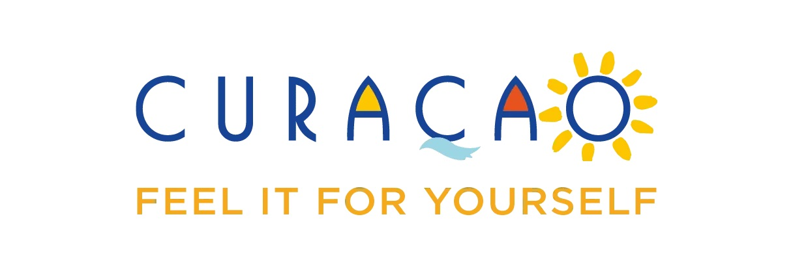

Curaçao is the vacation destination of your dreams. This colorful, vibrant island is home to some of the best beaches in the Caribbean, top-rated hotels and all-inclusive resorts, unique cultural experiences and events, and endless activities for families, friends, and couples. Every element, from the scenic views to the upbeat spirit of the local community is uniquely, and authentically Curaçao. Make this Caribbean island your next getaway and feel it for yourself.
Curacao’s beaches are typically small patches of sand at the back end of a small blue bay. They range from remote and rugged to well-developed entertainment hubs. With over 44 beaches each beach has a different vibe.
Traverse scenic trails and encounter diverse flora and fauna in Christoffel National Park, the largest of its kind on the island. Witness the primal forces of nature shaping the coastline in Shete Boka National Park, home to striking geological formations. Explore the labyrinthine mangrove forests and marvel at the marine life in Rif Mangrove Park. Delve into the enigmatic world of Hato Cave, adorned with ancient limestone formations and intriguing legends.
| Price | |
|---|---|
| Ticket from JFK | $480 |
| Hotel for 3 nights | $380 |
| Food per person, per day | $75 |
| Activities per person | $50 |
| Total Cost | $985 |